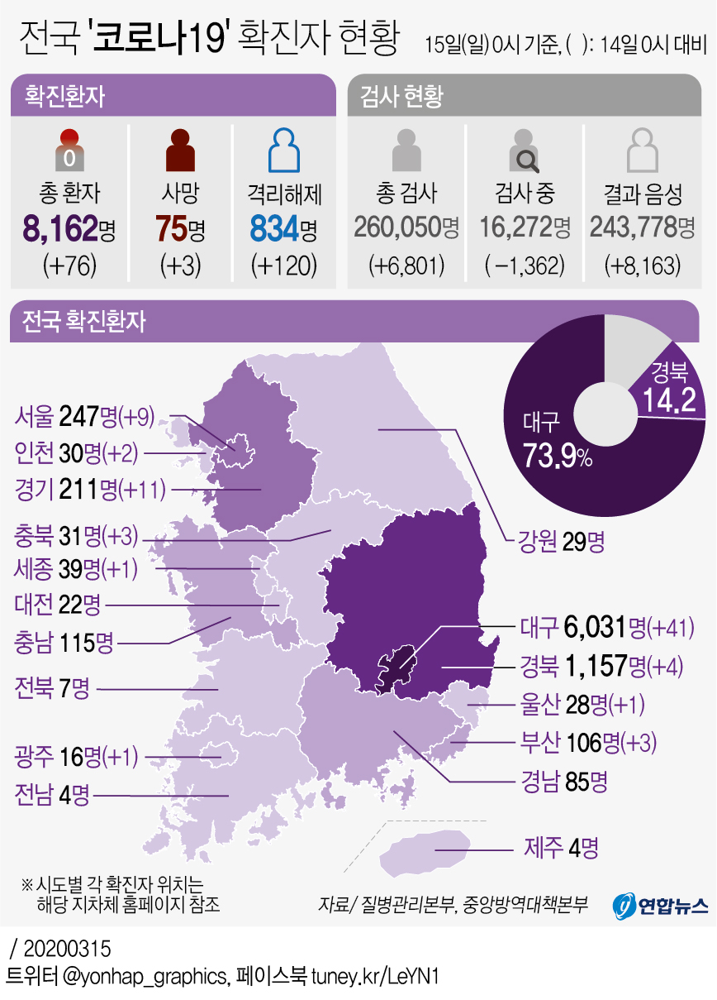

(서울=연합뉴스) 강애란 기자 = 15일 국내 신종 코로나바이러스 감염증(코로나19) 확진자 수는 총 8천162명으로 집계됐다.
중앙방역대책본부는 이날 0시 기준 코로나19 확진자가 전날 0시보다 76명 증가했다고 밝혔다.
신규 확진자가 두 자릿수가 된 건 지난달 21일 이후 23일 만이다. 신규 확진자는 지난달 21일 74명에서 22일 190명이 된 후 연일 100명 이상 발생했다.
신규 확진자 76명 가운데 45명은 대구·경북에서 나왔다. 대구 41명, 경북 4명이다. 수도권에서는 구로구 콜센터 집단감염 등 영향으로 총 22명의 신규 확진자가 나왔다. 서울 9명, 경기 11명, 인천 2명이 추가됐다.